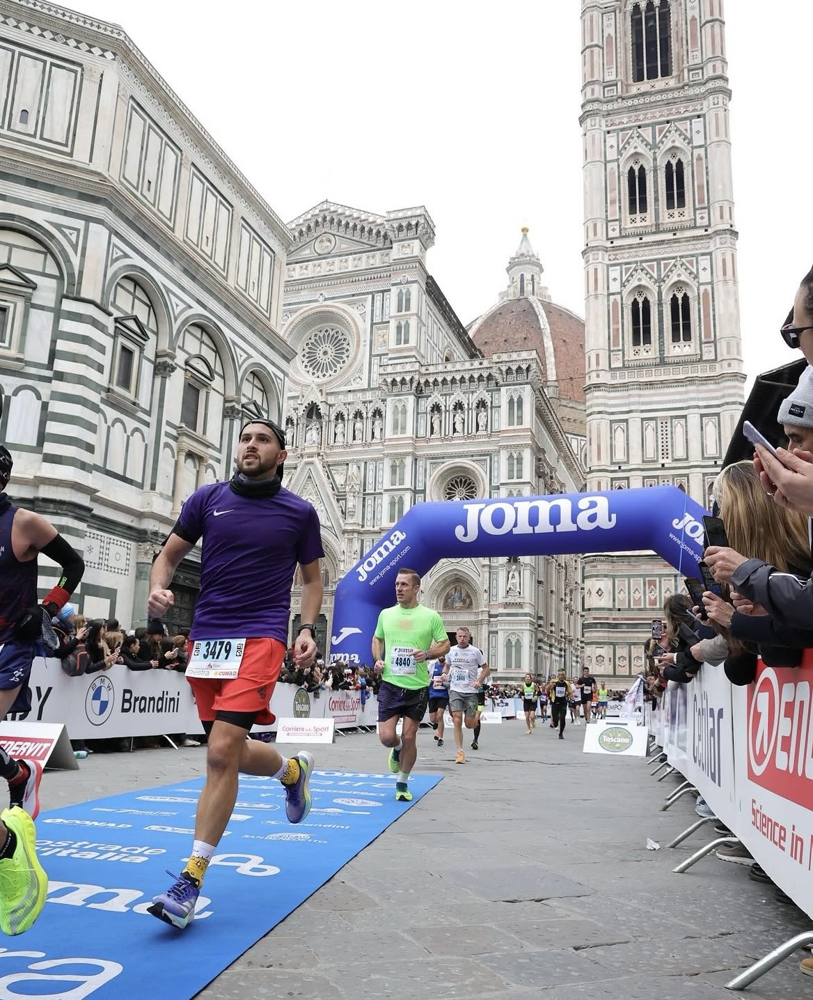
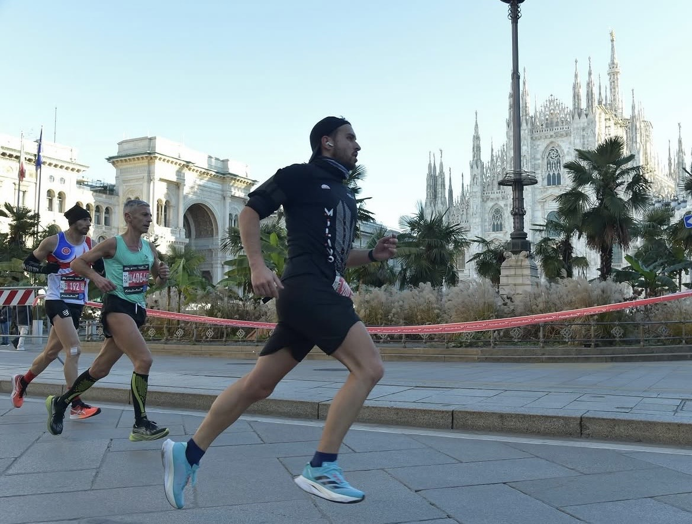

FIRENZELe giornate che vale la pena ricordare.
LEONARDO BARRACO · BORGOLAVEZZARO
Sport, tecnologia e una quantità non necessaria di grafici. Questo è il posto in cui tengo insieme tutto.
01 · RUNNING
Allenamenti, gare e chilometri. Corro perché mi piace; i grafici sono solo una conseguenza inevitabile.

02 · COSTRUISCO COSE
Un ecosistema domestico fatto in casa: allenamenti, calendario, finanze, manutenzioni, automazioni e parecchi container.
Ne riparliamo presto
03 · USCITE APERTE
Niente squadra, iscrizioni o passi imposti. Dico quando e dove esco; se qualcuno vuole aggregarsi, bene. Altrimenti amen.
FINE DEL GIRO